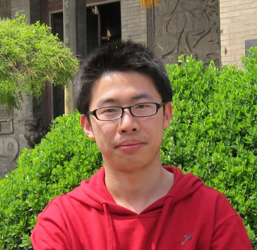

Bo Pang
|  | Ph.D. Candidate |
About Me
I recently obtained Ph.D. degree from the Department of Elecetrical and Computer Engineering, New York University, under the supervision of Prof. Zhong-Ping Jiang. I received my Master's degree in Automation from Shanghai Jiao Tong University, Shanghai, China, where I was advised by Prof. Weidong Zhang. Before that, I received my B.S. degree in Automation from Beihang University, Beijing, China.
My research focuses on decision making under uncertainty, includes but not limited to reinforcement learning, adaptive/approximate dynamic programming, optimal control, stochastic control, model predictive control.
Education
Ph.D. in Electrical Engineering, New York University, September 2017 – May 2021.
M.S. in Automation, Shanghai Jiao Tong University, September 2014 – March 2017.
B.S. in Automation, Beihang University, September 2010 – June 2014.
Recent News
Jul. 27th 2021 My paper received the 2020 Best Paper Award of the journal Control Theory and Technology!
Apr. 23rd 2021 I succesfully defended my dissertation!
Feb. 19th 2021 I gave an online one-hour talk to the group of Prof. George J. Pappas in University of Pennsylvania, on my work about robust reinforcement learning.
Visitor Flag Counter
This counter is set up for curiosity, starting from May 27th, 2020.